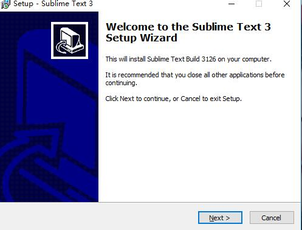
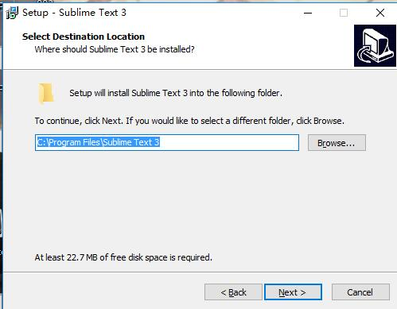
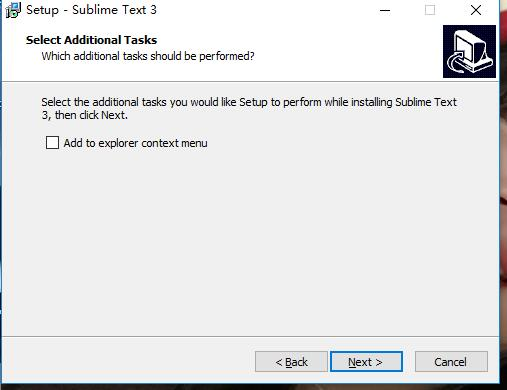
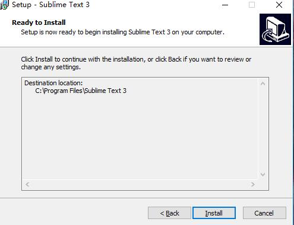
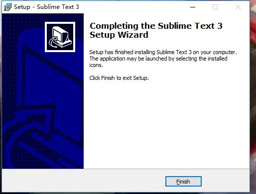
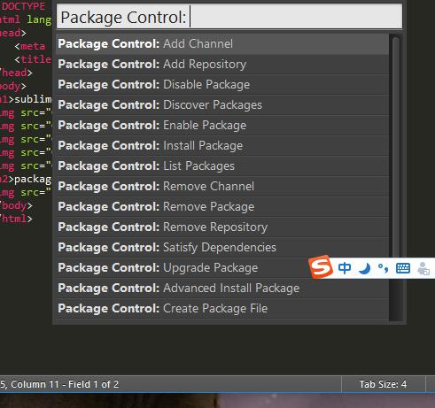
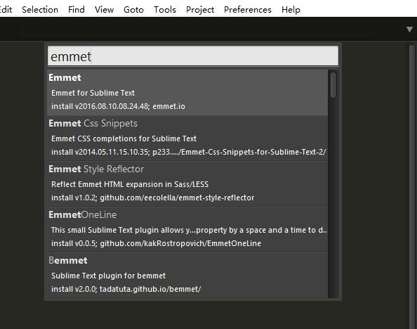
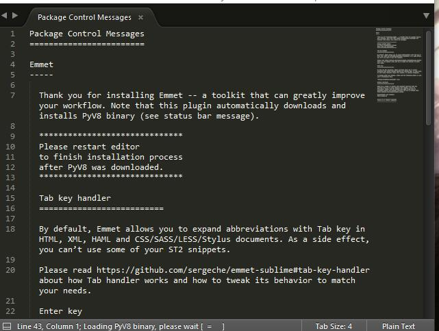
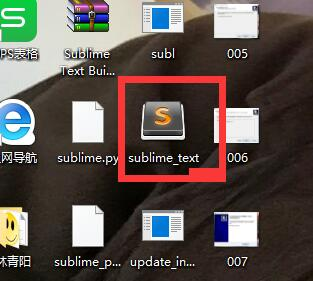

sublime text3的安装步骤如下，打开一直点击next键直到出现finish键，再点击算是安装完成





package control的安装如下图所示，点击preferences里的package control，出现如下图所示的图片

emmet的安装如下图所示，点击preferences里的package tontrol ,再输入intal 然后再按回车键 接着输入emmet 再按回车键。便算安装完成


重启后sublime text就已安装好
